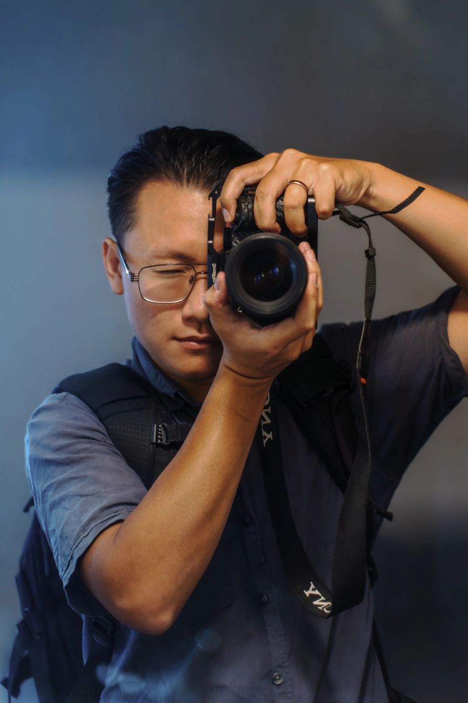
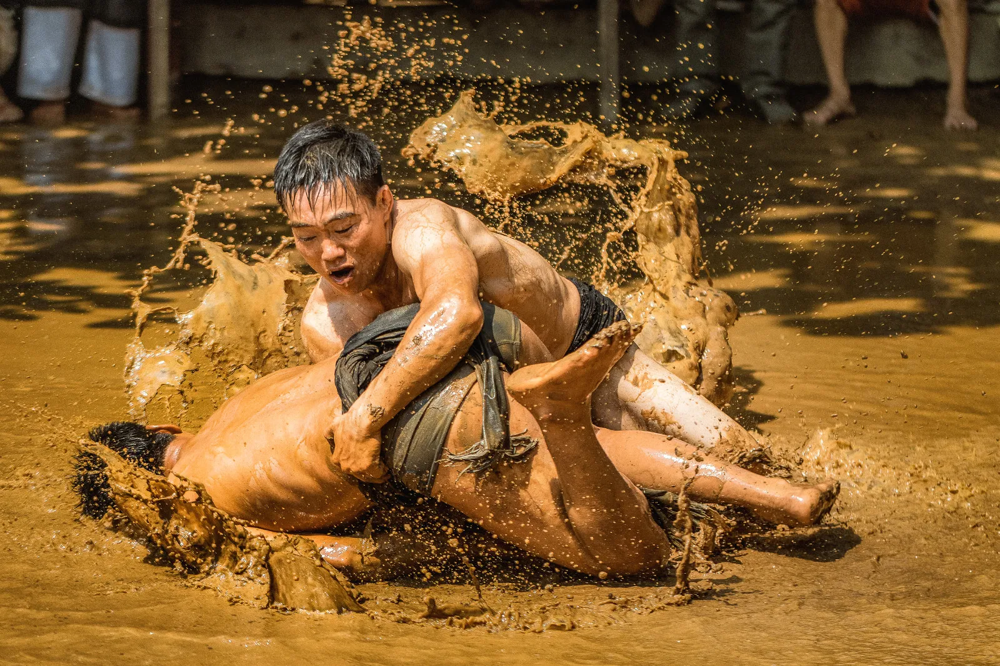
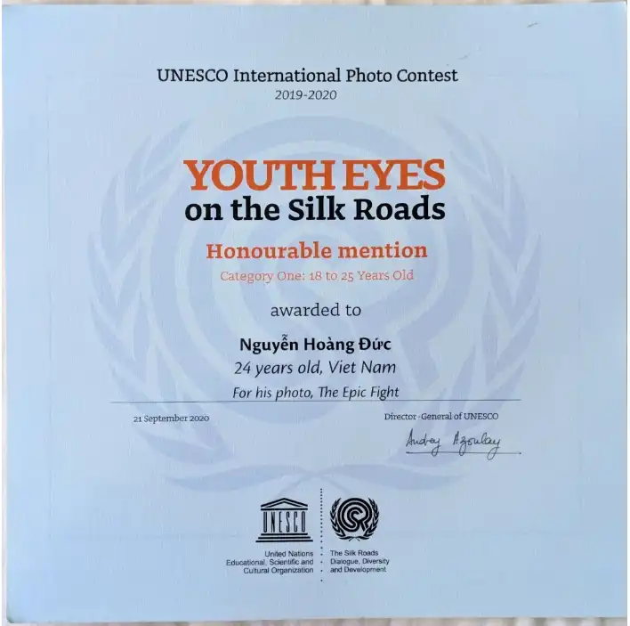

"NOT ALL THOSE WHO WANDER ARE LOST."
— J.R.R. Tolkien
Hello! My name is Duc - a freelance photographer who focuses on capturing travel stories and everyday moments, reflecting authentic life, culture, and human connection.
Travelling and taking photos became my excuse to look deeper at the world. For me, photography isn't about setting up the perfect shot—it's about capturing real, everyday life, subtle cultural details, and the genuine connections between people. It’s how I slow down, stay present, and make sense of the places I visit.
Over time, that curiosity turned into a way to share what I see with others. Aside from contributing visual stories to international publications and helping animal rescue campaigns across Asia, I love guiding people to find their own visual voice.
Since 2025, I’ve been working with Ecoventures Vietnam to run photography workshops for teenagers, helping them look past the surface and see the world through a photographer's eyes.
Whether I'm guiding guests around Vietnam or out pursuing my own travel stories, my main goal is simple: to create honest images that capture what it actually felt like to be there.

UNESCO'S Youth Eyes on the Silk Roads


Nguyễn Hoàng Đức
24 years old, Viet Nam
The Epic Fight
Two fighters compete in a mudball wrestling game to earn the kick-off for their team. The mudball wrestling festival Lễ Hội Vật Cầu Bùn is one of many fascinating festivals that have taken place across Viet Nam for hundreds of years. This three-day festival is known as Khanh Ha. The event celebrates Trieu Quang Phuc's victory over black demons. Historically, the village has faced serious flooding, so the act of fighting for the ball is symbolic of local people trying to bring back the sunshine and end the flooding. It is believed that the more times the wrestlers "steal" the ball back from one another, the more prosperous the next harvest will be.